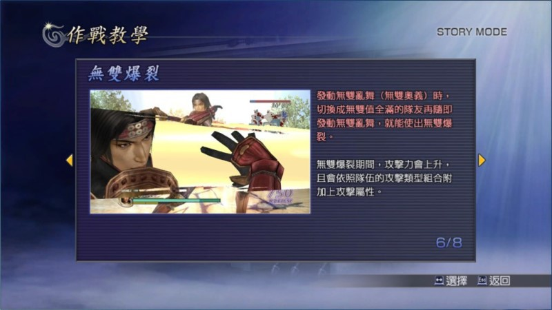

無雙亂舞
無雙技是指「無雙亂舞」，無雙值全滿時，直接按下鍵盤 L 鍵或者 PS 手把的○鈕就能施展。如果角色是在紅血的狀態（快沒血時原本綠色的血條會變成紅色），則改發動威力更強大的「無雙奧義」。
三國時期的角色與日本戰國的角色，「無雙技」有明顯的不同，三國角色是無雙亂舞按著不放，才會持續消耗無雙值，所以無雙值越高就能施展出時間越長的無雙技，而且隨時可以放手來節省無雙值。戰國角色則是按一下無雙亂舞就進入無雙技狀態，無雙值會在狀態時間內自動消耗。
以往無雙技給人的印象，是「無雙系列」中最強的技能，但是在《無雙 OROCHI》無雙技並沒有很強大的威力，甚至比會消耗無雙值的「類型招式」還不如。因為施展無雙技期間是無敵狀態，所以淪為解危用的技能。
手動恢復無雙值
無雙值滿的時候按無雙亂舞會發動無雙技，但沒滿的話，無雙亂舞按著不放，則會補充無雙值。
無雙爆裂
關於無雙爆裂？直接用圖看官方說明吧！

其中到的「隊伍的類型組合與附加攻擊屬性」為：
「速」型 2 人以上的話，會發動「神速」屬性。
「力」型 2 人以上的話，會發動「分身」屬性。
「技」型 2 人以上的話，會發動「吸生」屬性。
「速」「力」「技」各 1 人的話，則發動「陽」屬性。